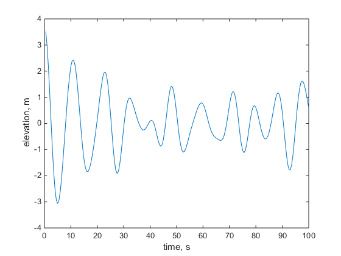
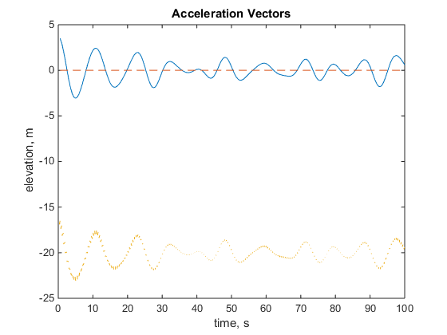
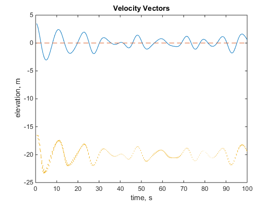
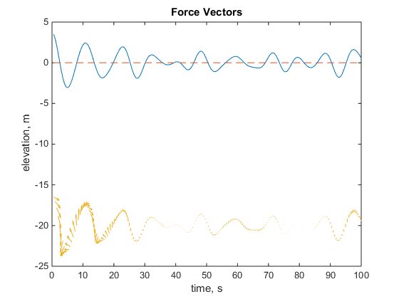
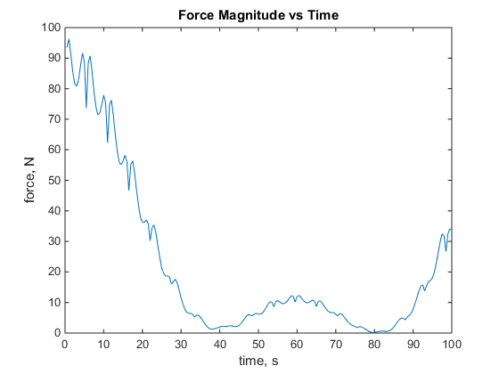
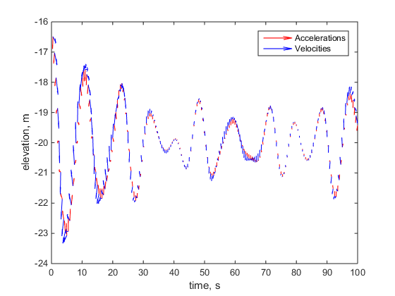

clear all
close all
home
d = 50; t = 0.5:0.5:100; x = 0; z = -20; theta = 0; rho = 1030;
length = 0.7; width = 0.4; height = 0.4;
swl = zeros(1, numel(t));
T = [10, 8, 12, 11, 6];
H = [1.8, 1, 2.2, 2, 0.4];
[ accelerations ] = particleAcc( d, t, x, z, theta, H, T );
[ velocities, eta ] = particleVel( d, t, x, z, theta, H, T );
[ forces ] = forces( velocities, rho, length, width, height, t);
figure; plot(t, eta); xlabel('time, s'); ylabel('elevation, m');
figure; plot(t, eta); hold on; plot(t, swl, 'linestyle', '--'); hold on;
quiver(t, eta + z, accelerations.x, accelerations.z, 0); hold on;
xlabel('time, s'); ylabel('elevation, m'); title('Acceleration Vectors');
figure; plot(t, eta); hold on; plot(t, swl, 'linestyle', '--'); hold on;
quiver(t, eta + z, velocities.x, velocities.z, 0); xlim([0, t(end)]);
xlabel('time, s'); ylabel('elevation, m'); title('Velocity Vectors');
figure; plot(t, eta); hold on; plot(t, swl, 'linestyle', '--'); hold on;
quiver(t, eta + z, forces.x/50, forces.z/50, 0); xlim([0, t(end)]);
xlabel('time, s'); ylabel('elevation, m'); title('Force Vectors');
figure; plot(t, forces.mag);
xlabel('time, s'); ylabel('force, N'); title('Force Magnitude vs Time');
figure; quiver(t, eta + z, accelerations.x, accelerations.z, 0, 'red'); hold on;
quiver(t, eta + z, velocities.x, velocities.z, 0, 'blue'); xlim([0, t(end)]);
legend('Accelerations', 'Velocities'); xlabel('time, s'); ylabel('elevation, m');
comparison(:,1) = velocities.x;
comparison(:,2) = velocities.z;
comparison(:,3) = forces.mag;
comparison(:,4) = forces.theta;
     